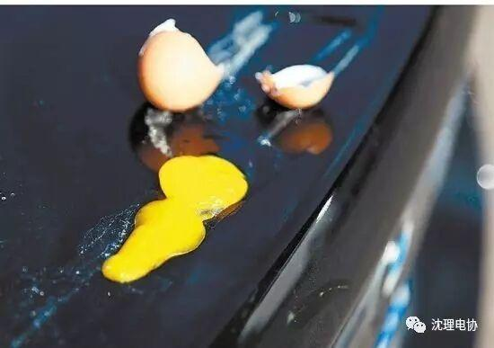
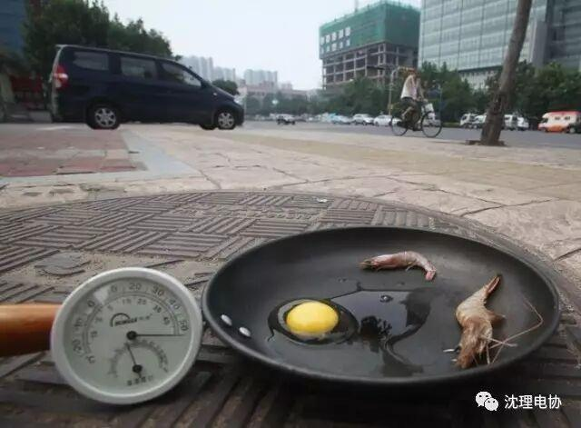

高考已过，高“烤”来袭
高考已过

高“烤”来袭
炎炎夏日已经到来，可各位小伙伴们有没有发现今年的夏天格外炎热呢？
至于有多热呢
小编最近除了上课连寝室门都不想出了

就在今天，辽宁省气象台已经接连发布了高温黄色、橙色以及红色预警。
虽然没有小编所在沈阳市的预警，可小编这里依然很热啊！
看他们
都热化了

小编甚至还打算过几天带着锅去马路上吃烧烤呢！

在这里，小编希望各位童鞋在出门的时候注意防晒防暑，可不要在期末的考场上热昏了哟！
当然了，避暑就要讲究方法，同学们切记不要因为天热就冲凉水澡，喝冷饮。虽然确实非常凉爽，但对身体却是百害而无一利的。
夏日最简单的解暑方法就是多多喝水，多多休息。
最后呢，小编提前祝大家期末没有重考，没有挂科，安心的度过这个炎热的夏天！
微信：sylgdzxh

沈阳理工电子协会
信息部——王 喆